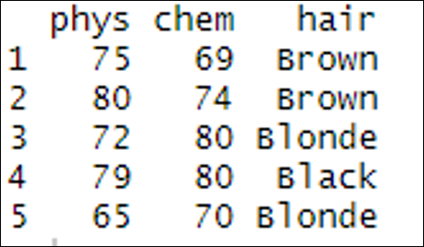

8 Dataframes
8.1 Introduction
This document is part of our “First Steps in R” resources. It follows on from similar documents about vectors, matrices and functions in R. It is assumed that the reader understands how to define vectors and matrices and call a function in R. If you would like to recap these topics, the documents and videos are on the MASH website.
8.2 What is a Data Frame?
A data frame is the name given in R to a very common way of setting out data. The sampling units are arranged in rows and the variables in columns like so:
| Physics score (%) | Chemistry score (%) | Hair Colour | |
|---|---|---|---|
| Alfred | 75 | 69 | Brown |
| Beatrice | 80 | 74 | Brown |
| Carl | 72 | 80 | Blonde |
| Daphne | 79 | 80 | Black |
| Earl | 65 | 70 | Blonde |
This data frame records the scores in Physics and Chemistry along with the hair colour for five (fictional) people.
8.3 Defining a Data Frame in R
Unlike a matrix, a data frame in R can contain character and numeric data in different columns. However, each column must have either character or numeric data only.
A data frame is an object so creating one in R is similar to creating a vector or matrix. In this case we use the function data.frame. The data.frame function takes vectors as arguments. These vectors form the columns of the data frame and the names of the vectors become the names of the columns. Remember, the columns in the data frame represent the variables, thus each vector contains the data for a single variable.
The following code defines a vector for each variable in the table above, combines the three vectors into a data frame and asks R to show the data frame.
phys <- c(75,80,72,79,65)chem <- c(69,74,80,80,70)hair <- c(“Brown”, “Brown”, “Blonde”, “Black”, “Blonde”)eg_frame <- data.frame(phys, chem, hair)eg_frame
This is the result when we type this code into the console:

phys, chem and hair are combined to make the data frame eg_frame, outputted in the console in RStudio.
8.4 Setting the Row Names
If we also want to record the names of the people in our survey, we could just add in another column with their names like so:
![An image showing the console in RStudio. In addition to the above code, 'people <- c('Alfred', 'Beatrice', 'Carl', 'Daphne', 'Earl')', between 'hair <- c('Brown', 'Brown', 'Blonde', 'Black', 'Blonde)' and 'eg_frame <- data.frame(phys, chem, hair, people)', is typed in. Underneath 'eg_frame', a data frame with five rows and four columns is outputted, and the column titles are 'phys', 'chem', 'hair' and 'people', and the rows are labelled from 1-5. In the 'phys' column are the numbers '75, '80', '72', '79' and '65'. In the 'chem' column are the numbers '69', '74', '80', '80' and '70'. In the 'hair' column are the colours 'Brown', 'Brown', 'Blonde', 'Black' and 'Blonde'. In the 'people' column are the names 'Alfred', 'Beatrice', 'Carl', 'Daphne' and 'Earl'.](media/07_media/F_Creating_a_data_frame_in_R_fig2.png "Figure 2")
people, is added to the data frame eg_frame, outputted in the console in RStudio.
But here, R sees the people column as another variable we have recorded. If we want to tell R that this column is special because it contains the names of our sampling units we need to label it using row.names.
We can do this in the definition of the data frame like so:
eg_frame <- data.frame(phys, chem, hair, row.names = people)
or we can define the data frame as before and then use row.names as a function like so:
eg_frame <- data.frame(phys, chem, hair)row.names(eg_frame) <- c(“Alfred”, “Beatrice”, “Carl”, “Daphne”, “Earl”)
With row names added by either of these methods, the data frame looks like this:

eg_frame, outputted in the console in RStudio.
8.5 Adding Extra Columns
For the data frame above we can add a new column like so:
biology_scores <- c(80, 69, 71, 72, 75)eg_frame$bio <- biology_scores
The first line defines a new vector called biology_scores which contains the data we want to add to our data frame. The second line uses $ to define a new column within the eg_frame data frame called bio. This new column is then assigned the values from the vector biology_scores.
Once the new column has been added, the data frame looks like this:
![An image showing the data frame outputted in the console in RStudio when the above code is typed in. It has five rows and four columns, and the column titles are 'phys', 'chem', 'hair' and 'bio', and the rows are labelled 'Alfred', 'Beatrice', 'Carl', 'Daphne' and 'Earl'. In the 'phys' column are the numbers '75, '80', '72', '79' and '65'. In the 'chem' column are the numbers '69', '74', '80', '80' and '70'. In the 'hair' column are 'Brown', 'Brown', 'Blonde', 'Black' and 'Blonde'. In the 'bio' column are the numbers '80', '69', '71', '72' and '75'.](media/07_media/F_Creating_a_data_frame_in_R_fig4.png "Figure 4")
bio, is added to the eg_frame data frame, outputted in the console in RStudio.
In general, to add a new column, we need code along these lines:
Name of data frame $ name of new column <- vector containing data for the new column
8.6 Exercise
1. Create a data frame in R to record what you had for breakfast and how long it took you to travel to work/lectures each day last week (you can make up this data if you neglected to keep records). Set the row names as the days of the week when defining the data frame.
2. Record how long it took you to get home each day in a numeric vector (again, fictional data is acceptable). Add this vector to your data frame as a new column.
3. Create a data frame in R containing the numbers in this table
| Team 1 Score | Team 2 Score |
|---|---|
| 2 | 1 |
| 1 | 1 |
| 3 | 2 |
| 2 | 4 |
| 1 | 3 |
4. Create a character vector containing the words game1, game2, game3, game4 and game5. Add this vector to your data frame as the row names.
8.6.1 Solutions
Solutions
> breakfast <- c(“egg”, “toast”, “toast”, “cereal”, “egg”)> am <- c(20,24,18,20,22)> days <- c(“Mon”, “Tues”, “Wed”, “Thur”, “Fri”)> Mornings <- data.frame(breakfast,am,row.names=days)> Morningsbreakfast amMon egg 20Tues toast 24Wed toast 18Thur cereal 20Fri egg 22> pm <- c(23,26,24,28,20)> Mornings$pm <- pm> Morningsbreakfast am pmMon egg 20 23Tues toast 24 26Wed toast 18 24Thur cereal 20 28Fri egg 22 20> Team1Score <- c(2,1,3,2,1)> Team2Score <- c(1,1,2,4,3)> Scores <- data.frame(Team1Score,Team2Score)> Games <- c(“game1”, “game2”, “game3”, “game4”, “game5”)> row.names(Scores) <- Games> ScoresTeam1Score Team2Scoregame1 2 1game2 1 1game3 3 2game4 2 4game5 1 3